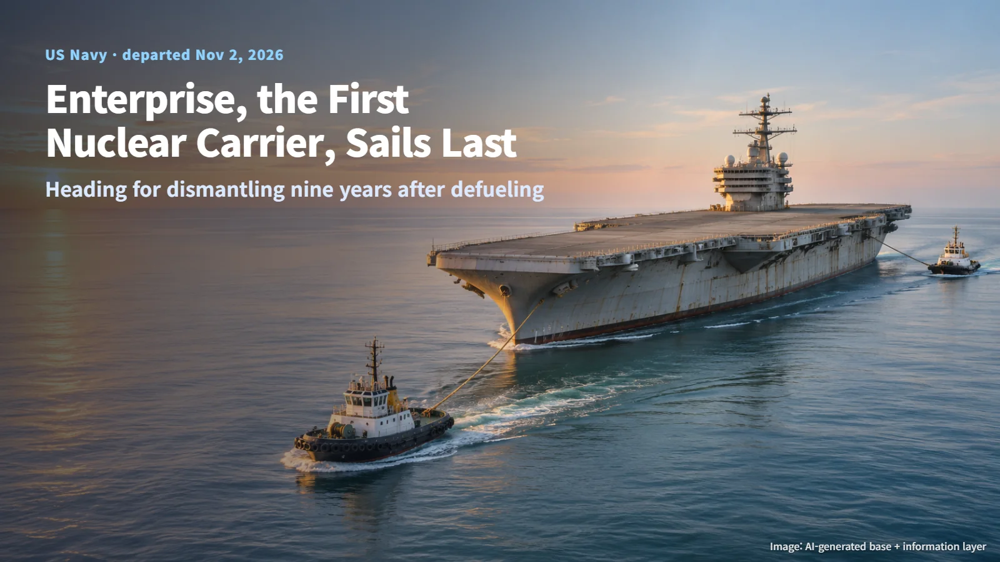
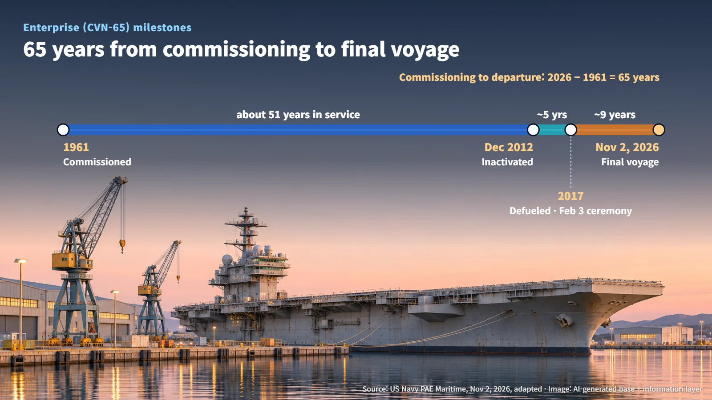
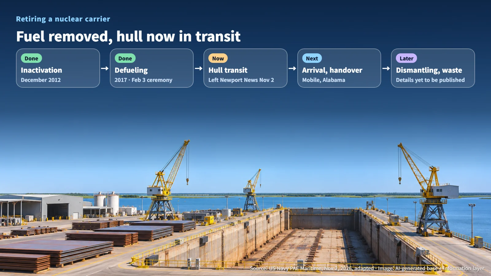

United States · Marine Nuclear
The First Nuclear Carrier's Last Voyage: Enterprise Heads for Dismantling Nine Years After Defueling
The first nuclear-powered aircraft carrier left Newport News on November 2 for a dismantling site in Mobile, Alabama, nine years after defueling.
What happens to the reactors of a giant nuclear-powered ship once its working life is over? It is a natural question whenever a nuclear aircraft carrier that spent decades at sea comes up for dismantling. On November 2, the world's first nuclear-powered aircraft carrier, Enterprise, began its final voyage toward the site where it will be taken apart. Walking through the stages this ship has already passed shows the order in which a nuclear vessel is retired.

November 2: Leaving Newport News
The US Navy's PAE Maritime announced that on November 2, the decommissioned nuclear carrier Enterprise (CVN-65) departed Newport News, Virginia, and began its move to a dismantling site in Mobile, Alabama. The voyage is one step in the program to dispose of the retired hull.
Picture a hull that served for more than half a century slipping out of port one last time. The event this announcement confirms is the departure itself. Enterprise is now on its way to the dismantling site, and arrival and the start of dismantling are the stages that come next. That makes this sailing a turning point: a hull that sat at the pier for years is moving to the place where the physical work of dismantling will happen.
A 65-Year Timeline, from Commissioning to the Final Voyage
Enterprise was commissioned in 1961 as the first nuclear-powered aircraft carrier. According to the Navy, it was inactivated in December 2012, the process of ending active service and shutting down operations, and reactor defueling was completed in 2017. The decommissioning ceremony took place in the same year, on February 3, 2017.
Using those years, the time between each stage works out as follows:
- Commissioning to inactivation: 2012 − 1961 = about 51 years
- Inactivation to completed defueling: 2017 − 2012 = about 5 years
- Completed defueling to this departure: 2026 − 2017 = about 9 years
- Commissioning to this departure: 2026 − 1961 = 65 years
Set side by side, the numbers tell a clear story. After more than half a century of service, it took about five years from shutdown to removing the fuel, and roughly another nine years from removing the fuel to moving the ship toward dismantling. The timeline shows that retiring a nuclear vessel is a long program carried out in sequence, with preparation time built into each stage.

Why the Fuel Comes Out First, and What Remains Afterward
In general, most of the radioactivity in a reactor sits inside the nuclear fuel, because the materials produced by fission accumulate within the fuel rods. That is why removing the fuel is the first step when a nuclear facility or vessel is retired. Once the fuel is out, the amount of radioactivity to be handled drops sharply, and the remaining work can be planned on a far more stable footing.
Work still remains after defueling. As a general rule, the structures and piping that surrounded the reactor carry radiological characteristics built up over long operation, meaning radioactive material may have deposited on them or the materials themselves may have become activated. These components become a separate category to manage, with their own defined scope for worker protection and waste management.
Put together, the stages of the Enterprise program look like this:
| Stage | Status | |---|---| | Inactivation (December 2012) | Completed | | Reactor defueling (2017) | Completed | | Decommissioning ceremony (February 3, 2017) | Completed | | Moving the hull to the dismantling site | Under way (departed November 2) | | Arrival in Mobile and site handover | Next stage | | Dismantling work | Next stage | | Radioactive waste processing and disposal | Details yet to be published |
(Source: US Navy PAE Maritime, November 2, 2026 announcement, adapted)
As the table shows, Enterprise enters the dismantling phase with its fuel, where most of the radioactivity was concentrated, already removed. The central question from here is how the remaining equipment will be sorted and processed, and on what criteria.

The Next Checkpoints: Arrival in Mobile and the Start of Dismantling
The official announcement centers on the departure. Detailed dismantling procedures, radioactive waste volumes, the final disposal route and a completion deadline remain to be published. That leaves three checkpoints to watch next: arrival in Mobile, the handover at the site, and a notice that dismantling has actually begun.
Dismantling programs typically move from transport to site handover, then dismantling, then disposal, and each stage has a designated responsible party and defined handover criteria. In the documents still to come, the key content will be the radiological characteristics of the equipment slated for dismantling, the scope of waste management, and the inspection and completion requirements for each stage.
The first nuclear carrier, which went to sea in 1961, is now heading into its final stage 65 years later. Taking the fuel out first, moving the hull after long preparation, and then clearing the remaining equipment in order: the process shows how a nuclear facility brings its working life to a close. For anyone who pictured the end of a nuclear ship as something vague, it now comes into view as a defined process that follows a set sequence.